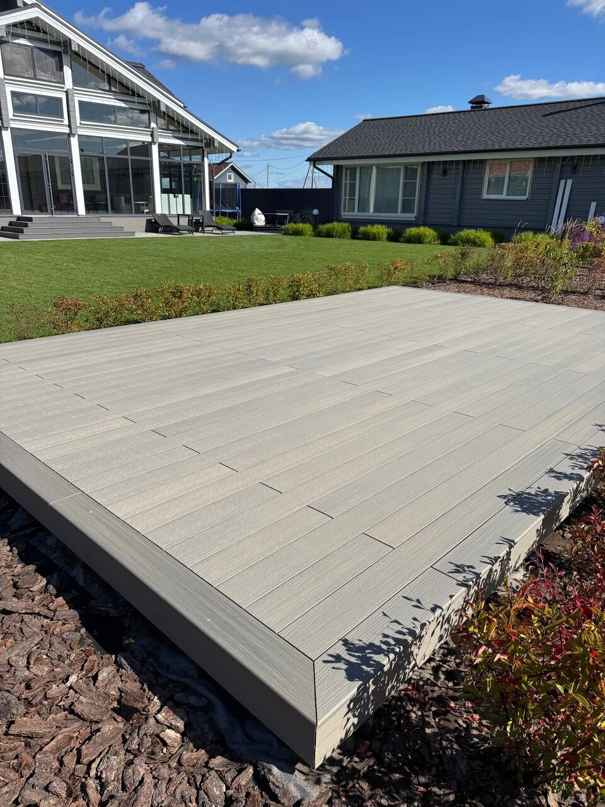
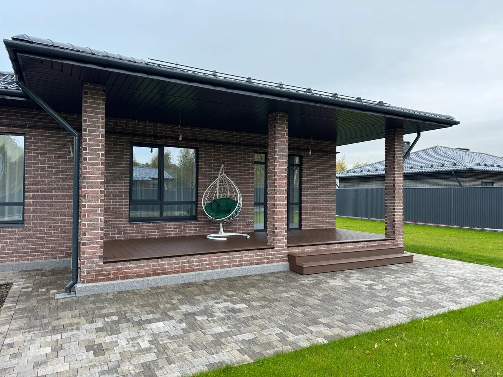
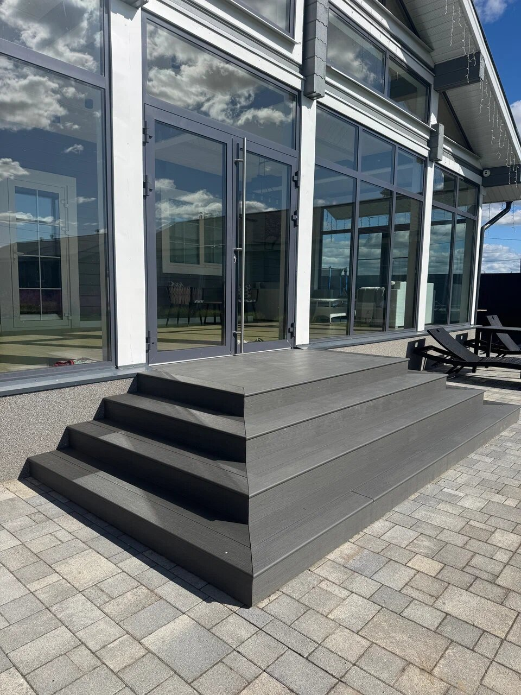
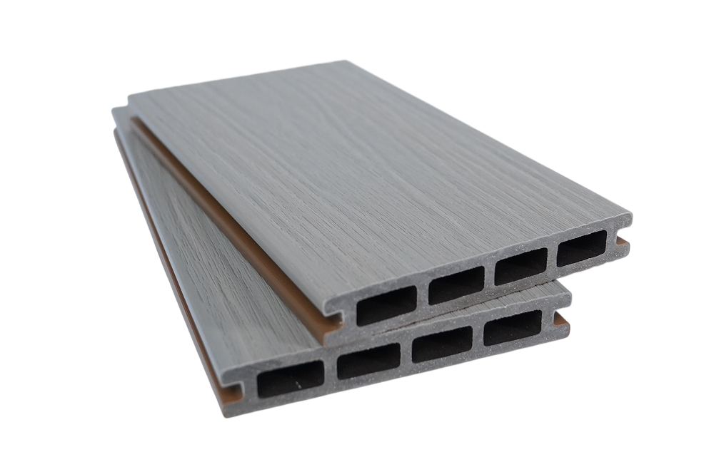
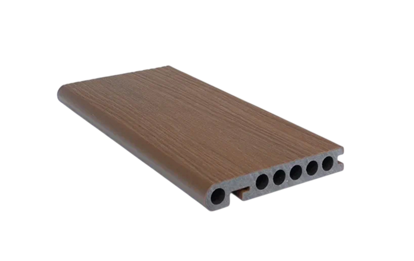
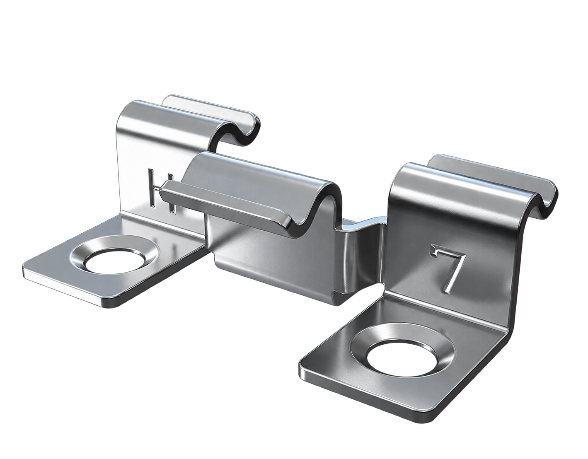

Как выглядит GRÜNDECK на сайте и в материалах
 Орех
Орех Шоколад
Шоколад Графит
Графит
ПепелМы почти монохромны цвет приносит дерево
Семь нейтральных оттенков держат весь интерфейс: фон, карточки, линии, текст и кнопки. Тёплые тона появляются только там, где есть сама доска.
Коричневый живёт в фото и продукте
Цвета доски показываем фотографией, а не заливкой. В интерфейсе они появляются только в элементах продукта: выбор цвета, образцы, карточки каталога, 3D-доска.




Один шрифт лёгкий и плотный
Manrope, вес 400 и 500. Крупные заголовки с плотным трекингом, вторая половина фразы серым. Цифры обычным весом, чтобы читались как данные.
Доска GRÜNDECK сделана по технологии Co-Extrusion: древесно-полимерное ядро закрыто полимерной оболочкой. Она держит цвет и не требует масла.
Фото дерево, свет и фактура
Реальные объекты при дневном свете. Ракурс вдоль досок, чтобы читалась фактура. Продукт отдельно — на Молоке с мягкой тенью, как в каталогах мебели.



- Дневной свет, ровный горизонт
- Ракурс вдоль досок, видна фактура
- Один герой в кадре: настил, крыльцо, зона у бассейна
- Продукт на светлом фоне с мягкой тенью
- Фильтры и тёплая тонировка
- Стоковые террасы чужих брендов
- Перекошенный горизонт и случайный мусор в кадре
- Текст поверх фактуры доски
Сейчас фото сняты на телефон. Для сайта нужна съёмка 4 цветов на объектах и продукта на светлом фоне. Список кадров подготовлю к этапу дизайна.
Элементы сайта одни и те же везде
Чёрные кнопки-пилюли, светлые карточки со скруглением, номера в контурных пилюлях. Всё ниже можно нажать.
Движение спокойное, по делу
Анимация объясняет продукт, а не украшает. Ниже приёмы из референсов и блок сайта, куда каждый пойдёт.
Правила перед тем как сдать
Проверка для дизайнера, верстальщика и всех, кто готовит материалы GRÜNDECK.
- 01В фонах, тексте и кнопках нет коричневого, он есть только в фото и элементах продукта
- 02Один шрифт Manrope, веса 400 и 500
- 03Вторая половина заголовка — Серым
- 04Главная кнопка — чёрная пилюля, одна на экран
- 05Фото реальные: свой объект, дневной свет, ровный горизонт
- 06Название бренда пишется GRÜNDECK, с Ü
- 07Цифры только подтверждённые клиентом, условные подписаны
- 08Проверено на 390, 768, 1366, 1440 и 2560 px